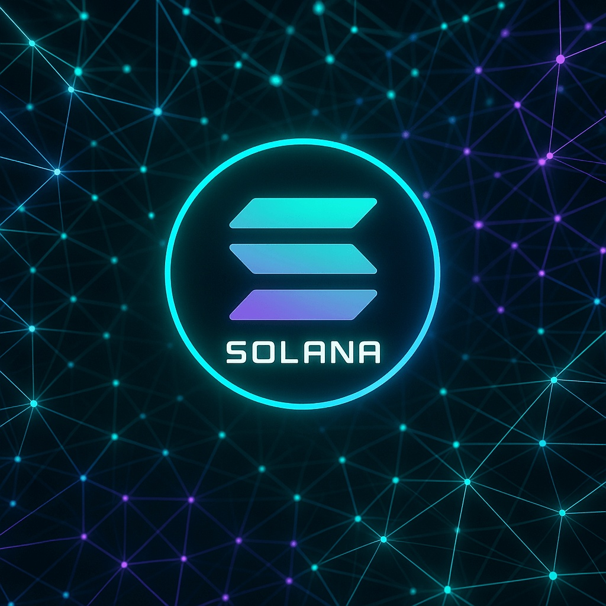

Solana Price Prediction for End of 2025: In-Depth Analysis and Insights
The information in this article is provided for educational purposes only and is not investment advice. Cryptocurrency investments carry risks.
Introduction
As of August 20, 2025, 01:00 AM EEST, Solana (SOL) is trading at approximately $180.50, establishing itself as one of the top high-performance blockchain platforms. Known for its fast transaction speeds and low costs, Solana supports decentralized applications (dApps) and has become a hub for DeFi, NFTs, and Web3 projects. Its proof-of-history (PoH) and proof-of-stake (PoS) consensus mechanisms enable scalability, making it a favorite among developers and investors. This article provides a detailed analysis of SOL’s price outlook for the end of 2025, examining bullish and bearish scenarios, key growth drivers, and potential risks based on current market trends and ecosystem developments.
Current Situation
As of August 20, 2025, Solana’s price is around $180.50, reflecting a 30% increase from June 2025, when SOL traded at $138.50. Over the past 30 days, Solana has shown strong performance, with 62% of days closing in the green and a moderate volatility of 6.1%. The Fear and Greed Index at 75 indicates strong investor optimism, driven by Solana’s growing ecosystem, increasing dApp adoption, and strategic partnerships. Over the past year, SOL’s price has risen from $110.00, achieving a 64% gain. Since 2020, when SOL was valued at $2.00, it has grown by an impressive 8925%, fueled by its scalability and developer-friendly infrastructure.
Price Predictions for End of 2025
Analyst forecasts for Solana by December 2025 vary depending on market dynamics. Bearish scenarios suggest a potential decline to $120.00 if a projected 30–50% market correction occurs in early 2025. Moderate projections estimate SOL stabilizing between $200.00 and $250.00, supported by continued growth in DeFi and NFT applications. Bullish forecasts predict SOL could reach $300.00–$350.00, particularly if a market rebound occurs between February and April 2025. Some analysts project Solana hitting $280.00 by October 2025 if adoption of its blockchain for high-throughput dApps continues to accelerate.
Factors Driving Price Growth
- High-Performance Blockchain: Solana’s ability to process thousands of transactions per second with low fees drives developer and user adoption.
- DeFi and NFT Growth: Solana’s ecosystem supports a thriving market for decentralized finance and non-fungible tokens, increasing demand for SOL.
- Strategic Partnerships: Collaborations with major projects and institutions enhance Solana’s credibility and adoption.
- Market Rally: A projected cryptocurrency market surge in 2025, particularly from February to April, could boost SOL’s price.
- Developer Ecosystem: Solana’s robust tools and infrastructure attract developers, expanding its dApp ecosystem.
Risks and Downward Factors
- Market Volatility: A projected 30–50% market correction in early 2025 could negatively impact SOL’s price and investor confidence.
- Network Reliability: Past network outages, though rare, could raise concerns about Solana’s stability if they recur.
- Regulatory Risks: Stricter global regulations on cryptocurrencies could limit Solana’s accessibility and growth.
- Competition: Rival blockchains like Ethereum, Aptos, and Sui could challenge Solana’s market share in the dApp space.
Volatility Analysis
From July to August 2025, Solana’s price rose from $138.50 to $180.50, marking a 30% gain with a volatility of 6.1%, indicating moderate stability compared to historical trends. Annual growth of 64% highlights SOL’s strong market performance. Technical indicators, including bullish trends in the 50-day and 200-day Exponential Moving Averages (EMAs), suggest continued upward momentum. A projected market recovery from February to April 2025 could further support price growth, especially as Solana expands its role in DeFi, NFTs, and Web3 applications. Its scalable infrastructure and growing ecosystem position it well for sustained adoption and value appreciation.

Conclusion
By the end of 2025, Solana’s price is projected to range between $200.00 and $300.00, with the potential to reach $350.00 in a bullish market driven by its high-performance blockchain, DeFi and NFT growth, and strategic partnerships. However, investors should remain cautious of market volatility, network reliability concerns, regulatory uncertainties, and competition from other blockchains. Thorough research and risk management are essential before investing in Solana.